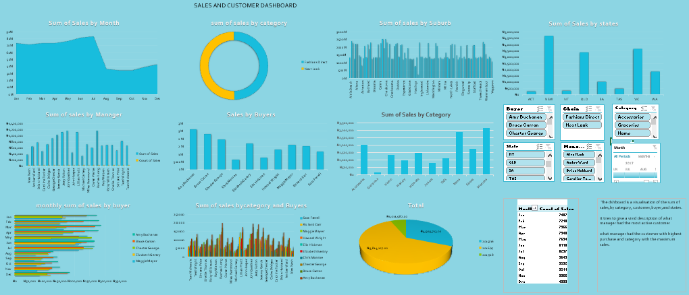
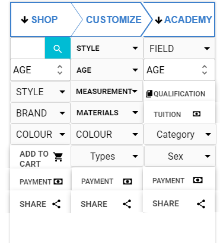
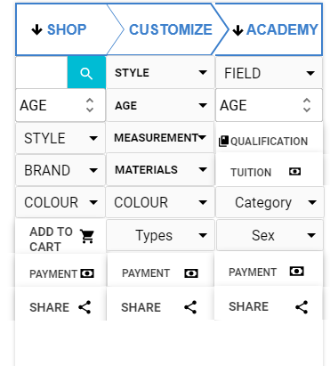

Excel was used on the sales dataset for cleaning and appropriating right datatypes to designated column then, additional measures where calculated creating extra columns for revenue and profit, thereafter creation of pivot table was used to give an apt summmary of analysis contain therein. Furthermore dashboard was created for pictorial summary.

Another example on the use of excel for analysis on financia services dataset.Exploration of multiple visuals for appropriate and matching depiction is evident.

The powerbi as a business intelligent tool is adopted no just for data visulisation which it is best suited for due to its massive options on visual but was also used to cleanup datasets and calculate measures through the use of DAX.
Tableau is also a business intelligence tool known for its colorful and powerful vast visuals that can be used to represent analytics results, it loads and cleanup dataset and also avails simpler method for calculation of additional measures.

 

Pencil is a tool that allows an analyst profer a user interface or experience of a tech solution to a business owner or organisation management, the above depicts a proferred mobile app for a budding fashion house that is tech migrating.
The bizagi helps visualise business or organisational process in service delivery or satff functionality. it also helps member or newly employed see the processes involved in carrying out duties, furthermore it improves the general business process.